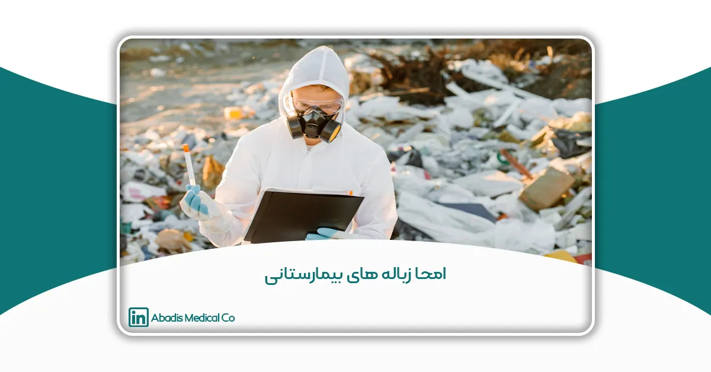
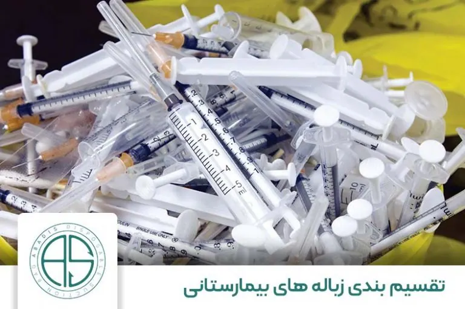
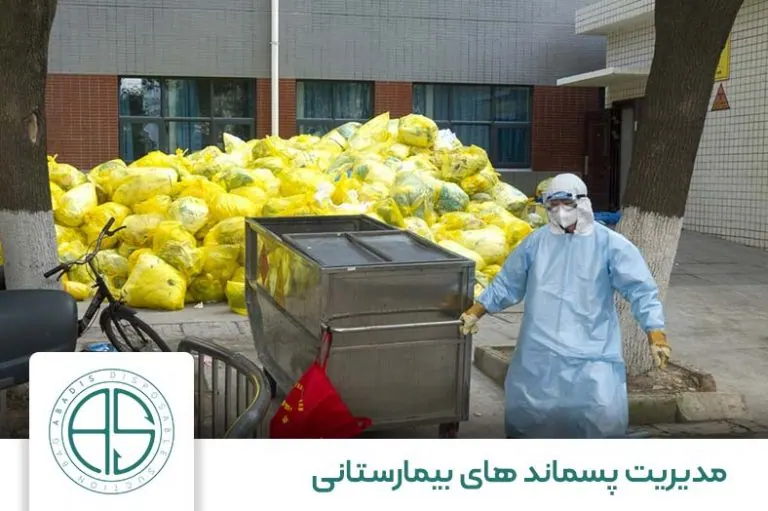
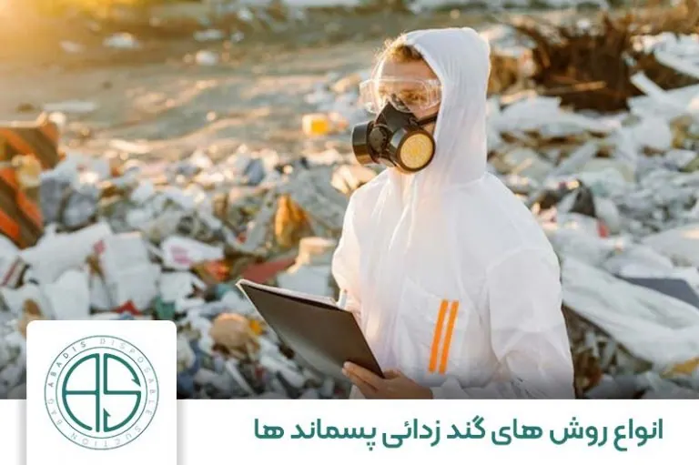
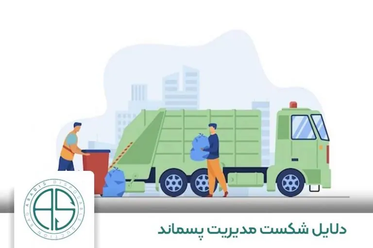

زباله های بیمارستانی یا پزشکی که حاصل از فعالیت بیمارستان ها ، مراکز درمانی ، آزمایشگاه ها و درمانگاه ها هستند، تهدیدی بسیار جدی برای انسان و محیط زیست می باشند و می توانند سلامت انسان را به خطر بیاندازند زیرا منجر به تولید زباله میشوند که ممکن است اثرات نامطلوبی بر سلامتی داشته باشند. برخی از این زباله های پر خطر ضایعات عفونی اند که شامل زباله های تیز، زباله های اعضای بدن، زباله های شیمیایی یا دارویی و زباله های رادیواکتیو، سیتوتوکسیک و دماسنج های خراب هستند.
طبق آمار سازمان جهانی بهداشت WHO بیش از ۴۰ درصد پسماند های بیمارستانی عفونی هستند و سالانه ۶ میلیون نفر در جهان به علت عدم مدیریت صحیح زائدات بیمارستانی، جان خود را از دست می دهند.
به گفته CDC (مرکز کنترل و پیشگیری بیماری آمریکا) شواهد اپیدمیولوژیک حاکی از آن هستند که پسماندهای عفونی متعلق به بیمارستانها نسبت به پسماندها و زبالههای خانگی آلودگی بیشتری ندارند. با این حال در جهان افراد زیادی که سهوا در معرض پسماندهای بیمارستانی قرار میگیرند، به انواع بیماریهای هپاتیت و HIV مبتلا شدهاند.
طبق مطالعات و تحقیقات صورت گرفته، در ۱۰ تا ۵۲ درصد پسماندهای بیمارستانی و دیگر مراکز بهداشتی حتی پس از ضدعفونی شدن، همچنان احتمال سرایت بیماریهای مختلف وجود دارد.
در این مقاله قصد داریم انواع زباله های بیمارستانی و روش های دفع آنها و همچنین امحا زباله های بیمارستانی را به اختصار توضیح دهیم ، تا بتوانیم اقداماتی برای مدیریت ایمن و مناسب پسماند های بیمارستانی انجام دهیم و از اثرات مخرب این زائدات جلوگیری کنیم .
در بیمارستان ها حجم انبوهی از زباله تولید می شود ، از مجموع زباله های تولید شده حدود ۸۵ درصد آن ها زائدات غیر خطرناک نظیر زباله های خانگی و اداری هستند که از نظر حمل و نقل مشکلی ایجاد نمی کنند ؛ و ۱۵ درصد باقی مانده مواد زائدی هستند که ممکن است سمی ، عفونی و رادیواکتیو باشند.
تقسیم بندی زباله های بیمارستانی

نمونه ای از زباله های بیمارستانی از تزریق ها شکل می گیرد.مواد زائد معمولی
زباله هایی که خطر بیولوژیکی ، شیمیایی ، رادیواکتیو ندارند و از نظر حمل و نقل خطرناک نیستند.
مواد زائد پاتوبیولوژیک
این زائدات عامل بیماری زا هستند و شامل بافت ها و اندام های بدن انسان و حتی لاشه حیوانات نیز می شوند.
مواد زائد رادیواکتیو
شامل زباله های جامد ومایع آلوده به رادیونوکلئید ها مثل مواد رادیو اکتیو و مواد پرتو درمانی می باشند.
اگر زبالههای پاتولوژیکی به هر نحوی با پسماندهای رادیواکتیوی برخورد داشته باشند، به عنوان زبالههای رادیو اکتیوی در نظر گرفته میشوند. پسماندهای رادیواکتیوی خطرات زیادی برای سلامتی انسانها و حیوانات دارند که در وهله اول ممکن است علائم آن در بدن دیده نشود، اما به مرور زمان باعث بیماریهای خطرناکی شوند؛ بنابراین برای از بین بردن این پسماندها باید حتما از یک تیم مجرب و حرفهای استفاده کرد.
مواد زائد شیمیایی
زباله هایی که حاصل ازفعالیت های ضد عفونی و همچنین فلزات موجود در دستگاه های پزشکی مانند جیوه هستند.
مواد زائد عفونی
این زائدات شامل زباله های آلوده به خون، مایعات ساکشن شده از بدن و مواد زائد آزمایشگاهی مانند محیط کشت و همچنین زباله های بیماران مبتلا به عفونت، زباله های کالبد شکافی و حیوانات آلوده از آزمایشگاه یا زباله های بیماران بخش های ایزوله و تجهیزات به عنوان مثال سوند، باند، تجهیزات پزشکی یکبار مصرف هستند.که از مجموع زباله ها حداقل ۳ درصد و حداکثر ۹۰ درصد زباله های بیمارستانی عفونی هستند.
زباله های تیز و برنده
مانند سرنگ ، سوزن ، تیغ های یکبار مصرف و غیره …. به طور کلی هر سال حدود ۱۶ میلیارد تزریق در جهان انجام می شود ، اما همه سوزن ها پس از استفاده به طور ایمن و صحیح دور ریخته نمی شوند و خطرات مخربی را در پی دارند.
زباله های ژنوتوکسیک
این زباله ها بسیار خطرناک، جهش زا، تراتوژن یا سرطانزا هستند، مانند داروهای سیتوتوکسیک که در درمان سرطان و متابولیتها از آنها استفاده میشود. امحا زباله های بیمارستانی این نوع پسماندها حتما باید به روش اصولی انجام شود.
داروها
داروها و واکسن های تاریخ مصرف گذشته، استفاده نشده و آلوده را شامل میشود.
خطرات بیشتر در کشورهای کم درآمد
در کشورهایی با درآمد بالا روزانه به طور متوسط ۵/۰ کیلوگرم زباله خطرناک تولید میشود، در صورتی که تولید این زباله ها در کشورهای کم درآمد به طور متوسط روزانه ۲/۰کیلوگرم است. با این وجود کشورهای کم درآمد در معرض خطر بیشتری هستند، زیرا تفکیک زباله در این کشورها انجام نمیشود. حتی با وجود کمتر بودن زباله های خطرناک نسبت به کشورهای پردرآمد امحا زباله های بیمارستانی انجام نمیگیرد.
خطرات زباله های بیمارستانی
پسماند های بیمارستانی حاوی میکروارگانیزم های مضری هستند که می توانند بیماران ، کادر درمان و عموم مردم را آلوده کنند و عدم مدیریت صحیح این پسماند ها اثرات جبران ناپذیری برای سلامت انسان و محیط زیست خواهد داشت. از جمله خطرات این میکروارگانیسمها عبارت است از:
امکان سوختگی ناشی از تشعشع وجود دارد.
از زباله های تیز امکان ایجاد جراحات وجود دارد.
امکان مسمومیت و آلودگی از طریق انتشار محصولات دارویی، به ویژه آنتی بیوتیک ها و داروهای سیتوتوکسیک وجود دارد.
از طریق فاضلاب و عناصر یا ترکیبات سمی مانند جیوه یا دیوکسین که در طی سوزاندن آزاد میشوند، امکان مسمویت و آلودگی وجود دارد.
برای به حداقل رساندن بازیافت، موارد زیر نکات قابل توجهی می توانند باشند، به شرح زیر هستند :
کاهش میزان زباله در مبدا.
انتخاب محصولاتی که ضایعات کمتری تولید میکنند، مثل مواد بسته بندی کمتر و امحا زباله های بیمارستانی هر چند کم باشند.
برای خرید محصولات نظافتی تامینکنندگانی را انتخاب کنید که ظروف خالی را برای پر کردن مجدد پس میگیرند.
از هدر رفتن جلوگیری کنید، به عنوان مثال در حین مراقبت یا فعالیتهای تمیز کردن صرفه جویی کنید.
تجهیزاتی مصرف کنید که بتوان بارها از آن استفاده کرد. مثلا جایگزین کردن ظروف قابل شستشو به جای ظروف یکبار مصرف.
امکان استفاده از سوزن و سرنگ به صورت مجدد ممکن نیست و بهتر است هر چه سریعتر امحا زباله های بیمارستانی از این قبیل صورت گیرد.
مدیریت پسماند های بیمارستانی

خطرات ناشی از ریختن پسماندهای بیمارستانی در جهان بسیار ناگوار هستند.
مدیریت زباله های بیمارستانی نیازمند برنامه های مستمر ، تجهیزات خاص ، افراد آموزش دیده می باشد.
بر اساس نظرسنجی سازمان جهانی بهداشت در ۲۲ کشور در حال توسعه، حدود ۱۸ تا ۶۴ درصد از مراکز بهداشتی درمانی از روش های نامناسب دفع زباله استفاده می کنند.
طبق طبقه بندی رایج، پسماندهای پزشکی را می توان به دو دسته عفونی و غیر عفونی طبقه بندی کرد. این دو نوع زباله باید در مبدأ تولید تفکیک شده و فعالیت های حداقل سازی و ضدعفونی بر اساس مقررات و دستورالعمل های ملی انجام شود
در صورت عدم مدیریت صحیح پسماند های بیمارستانی در تفکیک، به حداقل رساندن یا ضدعفونی می تواند منجر به مشکلات جدی بهداشتی و زیست محیطی شود.
در صورتی که پسماند های بیمارستانی قبل از دفن جداسازی نشوند، ممکن است عوامل بیماری زا در پسماندها در محیط رها شوند و منابع آب را آلوده کنند. علاوه بر این، آلودگی آب ممکن است ناشی از مواد خطرناک (مانند فلزات سنگین) موجود در پسماندهای زیست پزشکی باشد.
برای مدیریت صحیح پسماند های بیمارستانی بهتر است در ابتدا زباله ها تصفیه شوند که به ۳ صورت انجام می شود :
ضد عفونی با اشعه مایکروویو
استریلیزاسیون با بخار
ضد عفونی شیمیایی
تقسیم بندی زباله های بیمارستانی به ۳ طریق صورت می گیرد
بر اساس روش دفع
بر اساس درجه احتمال خطر
براساس منبع تولید
که بیشتر کشور های توسعه یافته از روش سوم برای تقسیم بندی پسماند های بیمارستانی استفاده می کنند .
انواع روش های گند زدائی پسماند های بیمارستانی

متخصصی که مدیریت و امحا زباله های بیمارستانی را مورد بررسی قرار میدهد.
گند زدائی پسماند های بیمارستانی با مواد شیمیایی
در بسیاری از کشور ها در حال حاضر از مواد شیمیایی برای گند زدائی پسماند های بیمارستانی استفاده می شود در این روش بهتر است در ابتدا پسماند های بیمارستانی خرد شوند که این عمل دو مزیت دارد : ۱) حجم مواد زائد کاهش می یابد ۲) تاثیر مواد گند زدا بیش تر می شود
با این حال گندزادئی پسماند های بیمارستانی با مواد شیمیایی در صورتی که درست انجام نشود منجر به انتشار مواد شیمیایی در محیط می گردد.
گند زدائی پسماند های بیمارستانی با دستگاه اتوکلاو
فرآیند اتوکلاو شامل استریلیزاسیون با بخار است و در پایان فرآیند، میکروارگانیزم ها به طور کامل ازبین می روند این روش کم هزینه ترین روش برای گند زدائی زباله ها می باشد و برای زباله هایی که دارای چگالی کم تری هستند مناسب می باشد و برای مواد زائد پاتولوژی استفاده نمی شود؛ حدود ۹۰ درصد از زباله ها قبل از ارسال به محل دفن زباله به این روش ضدعفونی می شوند.
این روش نسبت به روش های دیگر هزینه کمتری دارد. برای محیط زیست و سلامتی انسان و حیوانات، خطرناک نیست.
سوزاندن
سوزاندن زباله های بیمارستانی قدیمی ترین و مطمئن ترین روش است که علاوه برا اینکه عمل گند زدائی پسماند های بیمارستانی را انجام می دهد سبب کاهش حجم زباله ها می گردد، اما مزایای اصلی سوزاندن این است که سریع ، آسان و ساده است و در صورتی که سوزاندن با روش درست انجام نشود می تواند منجر به انتشار آلاینده ها در هوا و تولید خاکستر گردد.
یکی از ایرادات این روش، انتشار گازهای گلخانهای به هوا است که میتواند برای سلامتی افراد و دیگر موجودات زنده بسیار خطرناک باشد. شاید در نگاه اول انتخاب بسیاری از بیمارستانها سوزاندن پسماندهای عفونی باشد؛ اما قبل از هرکاری ابتدا باید ایمنی سوزاندن پسماندها را سنجید و سپس دست به انجام عمل سوزاندن زد. و همچنین سوزاندن فلزات سنگین مثل سرب و جیوه موجب انتشار فلزات سمی در محیط می گردد.
ماکروویو
در این روش زباله ها خرد می شوند با آب مخلوط می شوند و سپس گرم می شوند و از این طریق میکروارگانیسم ها از بین می روند و مزیت اصلی این روش خرد شدن زباله ها می باشد. و این روش نسبت به سوزاندن بسیار کار آمد تر می باشد. بنابراین میتواند گزینه بهتری نسبت به آن باشد. مانند اتوکلاو، از این روش نمیتوان برای تمامی پسماندهای عفونی بیمارستانی استفاده کرد. اما چیزی حدود ۹۰ درصد پسماندهای بیمارستانی را میتوان از این طریق از بین برد. اما حال ممکن است این سوال پیش بیاید که کدام روش بهترین راه برای از بین بردن پسماندهای عفونی بیمارستانی است؟ پاسخ این سوال نسبی است؛ یعنی مسئولین این امر باید بسنجند که برای از بین بردن پسماندهای بیمارستان خود کدام راه پاسخگوی نیاز آنها است. البته که روش سوزاندن طرفداران بیشتری دارد؛ چون میتوان بابت از بین رفتن پسماندها اطمینان حاصل کرد. اما این انتخاب برای محیط زیست بسیار خطرناک است و گازهای سمی و گلخانهای تولید میکند. اتوکلاو شاید مطمئنترین و به صرفهترین انتخاب افراد باشد؛ چون گازهای سمی تولید نمیکند و تقریبا گران نیست. با این حال راه مناسب برای از بین بردن پسماندهای بیمارستانی بستگی به نوع زبالههای بیمارستانهای مورد نظر دارد.
مواد شیمیایی
یکی از راههای متداول برای از بین بردن پسماندهای عفونی مایع، استفاده از ضدعفونیکنندههای شیمیایی است. معمولا در این روش از ضدعفونیکنندههای شیمیایی استفاده میشود تا میکروارگانیزمها و پاتوژنها را از بین ببرند؛ اما استفاده از این ضدعفونیکنندهها تنها به مایعات محدود نمیشود و میتوان برخی از جامدات را نیز از این طریق ضد عفونی کرد.
برای اینکه ضد عفونی در این روش بهتر اتفاق افتد، بهتر است پسماندهای جامد را ابتدا آسیاب کنید که به از بین رفتن میکروارگانیزمها اطمینان حاصل شود. پس از اینکه پسماندهای مایع بیمارستانی ضدعفونی شدند، آنها را به درون فاضلابها میریزند و دفع میکنند.
دلایل شکست مدیریت پسماند

ماموران شهرداری در حال جمعآوری و حمل پسماندهای بیمارستانی هستند.
آگاهی نداشتن از خطرات پسماندهای بهداشتی، آموزش ناکافی در مدیریت صحیح پسماند، عدم وجود سیستم امحا زباله های بیمارستانی از طریق دفع آنها، منابع مالی و انسانی کم و در نهایت اهمیت ندادن به این موضوع از مشکلات مرتبط با آن است. بسیاری از کشورها برای مدیریت زباله مقررات مناسبی ندارد، برخی دیگر که مقررات دارند، اجرا نمیشود.
جنبه های مالی مدیریت پسماند های بهداشتی _ درمانی
هزینه های مستقیم لوازم و مواد برای جمعآوری، حمل و نقل، ذخیرهسازی، تصفیه، دفع، ضدعفونی کردن و تمیز کردن که مورد استفاده قرار میگیرند و شامل موارد زیر است:
هزینه های آموزشی (کار و مواد).
هزینه های بهرهبرداری و نگهداری تاسیسات درمانی در محل.
هزینه های خدمات پیمانکاری قابل اعتماد و متخصص.
نتیجه گیری
گروه های اصلی در معرض خطر پزشکان، پرستاران، کمک های مراقبت های بهداشتی و پرسنل تعمیر و نگهداری بیمارستان هستند. گاهی ممکن است بیماران در موسسات مراقبت های بهداشتی یا دریافتکننده مراقبت های خانگی، بازدیدکنندگان از مراکز بهداشتی و درمانی، کارگران در خدمات پشتیبانی وابسته به موسسات مراقبت های بهداشتی مثل خشکشویی، حمل و نقل زباله و حمل و نقل، کارگران در تاسیسات دفع زباله مانند زباله سوز و حتی لاشخورها در معرض این پسماندها قرار بگیرند.
خطرات ناشی از این نوع زباله ها با منابع پراکنده هر چند کم باشند را نباید نادیده گرفت. گاهی همین زباله های ناچیز به افرادی که در معرض آن قرار گرفته اند، آسیب جدی می زند.
ترویج روش های کاهش حجم و تفکیک زباله های بیمارستانی و توسعه استرانژی ها همراه با نظارت برای بهبود شیوه های تفکیک و دفع زباله ها بسیار موثر می باشد؛ همچنین اجرای فعالیت های مدیریتی می تواند جنبه های بهداشتی و زیست محیطی مدیریت پسماند بیمارستانی را بهبود بخشد.